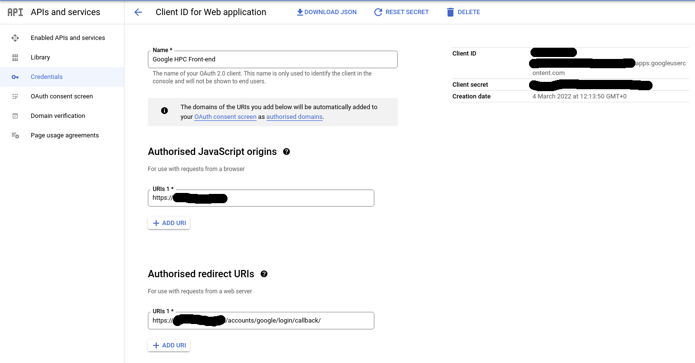
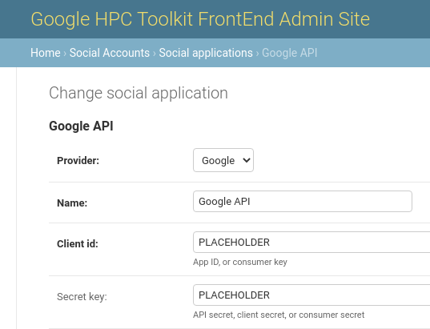

Admin Guide
This guide is for administrators of the Open Front End. An administrator can deploy the Front End, manage the lifecycle of HPC clusters, set up networking and storage resources that support clusters, install applications, and manage user access.
Basic administrator knowledge of the Google Cloud Plaform is needed in order to create projects and user accounts, but all other low-level administration tasks are handled by the Open Front End.
Open Front End is a web application built upon the Django framework. By default, a single Django superuser is created at deployment time - this superuser then has administrator privileges. For large organisations that need additional administrators, additional Django superusers can be created from the Admin site within the Front End, once it has been deployed.
The Open Front End uses the Google Cloud HPC Toolkit to provision resources for networks, filesystems and clusters using a service account that has its credentials registered to the Front End. The service account is also used for access management and billing.
Open Front End Deployment
The Open Front End is deployed from a client machine using a shell script. The script will guide the admin through the setup process, prompting for input of required parameters.
The Front End can also be deployed using a configuration file specified with
the --config option. In this case, the script will read the required
parameters from the YAML file instead of prompting the user for input. This
allows for an automated deployment process but it's important to ensure that
all required parameters are specified properly in the configuration file before deploying.
Prerequisites
Client Machine
The client machine must run Linux and there are a small number of prerequisites that must be installed before the Open Front End can be deployed:
- Git
- Terraform CLI installation
- Google Cloud CLI installation (
gcloudandgsutil)
Download Google Cloud HPC Toolkit
The Google Cloud HPC Toolkit repository needs to be cloned to the client
machine then the working directory needs to be chnaged to the Open Front End
(ofe) directory:
git clone https://github.com/GoogleCloudPlatform/hpc-toolkit.git
cd hpc-toolkit/community/front-end/ofe
All further deployment actions must be performed from this directory.
Google Cloud Platform
Your organisation must already have access to the Google Cloud Plaform (GCP) and be able to create projects and users. A project and a user account with enabled APIs and roles/permissions needs to be created. The user account must also be authenticated on the client machine to allow it to provision GCP resources.
GCP Project
A GCP project is required with the following APIs enabled:
Compute Engine API
Cloud Monitoring API
Cloud Logging API
Cloud Pub/Sub API
Cloud Resource Manager
Identity and Access Management (IAM) API
Cloud OS Login API
Cloud Filestore API
Cloud Billing API
Vertex AI API
If these are not enabled, the deployment script will ask to enable them for you.
GCP User
A GCP user that is a member of the project will be able to deploy the Open
Front End, but must have appropriate privileges. A user that is an Owner of
the project will automatically have all required roles and permissions. Alternatively, another account with access to the project, but a limited set of roles can be used, which can help satisfy security concerns. The gcloud
command can be used to switch to another account
and apply IAM roles. IAM roles can also be applied via the GCP Console. The
required roles are:
Compute Admin
Storage Admin
Pub/Sub Admin
Create Service Accounts
Delete Service Accounts
Service Account User
Project IAM Admin
If required, an even stricter, or least-privilege custom role can be created. Details are given in the Advanced Admin Guide.
The user account must also be authenticated to deploy GCP resources, which can be done with the following command:
gcloud auth application-default login --project=<PROJECT_ID>
You will be prompted to open your web browser to authenticate. If further help is needed, please refer to the following GCP documentation:
Deployment Process
Manual Deployment
The Open Front End uses a deployment script run on the client machine and prompts the Admin for required parameters.
- Run
./deploy.sh - Follow prompts to name the Open Front End VM instance, specify the GCP project, zone and subnet (subnet is optional, and one will be created if required). The hosting VM will be referred to as the service machine from now on.
- Follow prompts to enter domain name (DNS hostname) and IP address for the service machine.
- For a production deployment, provide a domain name and static IP address. If a static IP is needed, follow the on-screen instructions. An SSL certificate will automatically be obtained via LetsEncrypt to secure the web application.
- For dev and testing purposes, the domain name and static IP address and domain name can be left blank. The system can still be successfully deployed and run with an ephemeral IP address, however OAuth2-based login (see later) will not be available as this requires a publicly resolvable domain name.
- Follow instructions to provide details for an Admin (the Django superuser) account - username, password, email address.
- Confirm whether to create a service account for managing clusters. This will create a service account, and generate a credential, associated with the GCP project specified earlier. This service account may not be needed if using an existing one, or using multiple projects (see the Advanced Admin Guide for details).
- If selected, a credential file,
credential.json. will be created in the directory that needs to be registered in the Open Front End (see below). - Confirm the parameters are correct when prompted and the deployment can proceed.
- If confirmed, the VM instance will be created. It will take up to 15 minutes to provision the full service machine software stack.
- Once deployed, it will be possible to log into the Open Front End using the
Admin account details given, at the specified domain name or IP address
(output as
server_ip).
Automated Deployment
The Open Front End can also be deployed automatically using a YAML configuration
file with all the required parameters. To deploy using this option, run
./deploy.sh --config <path-to-config-file>. All required parameters for
deployment must be specified in the YAML file. If any required parameter is
missing or invalid, the script will exit with an error and no resources will be
created or modified.
If the DJANGO_SUPERUSER_PASSWORD environment variable is set, it will be used to set the Django superuser password instead of the value in the YAML file. This is a more secure way of handling passwords.
To use a configuration file for automated deployment, follow these steps:
- Create a file called config.yaml:
deployment_name: MyDeployment
project_id: my-project-id
zone: us-west1-a
subnet_name: my-subnet # (optional)
dns_hostname: myhostname.com # (optional)
ip_address: 1.2.3.4 # (optional)
django_superuser_username: sysadm
django_superuser_password: Passw0rd! # (optional if DJANGO_SUPERUSER_PASSWORD is passed)
django_superuser_email: sysadmin@example.com
- Save the file in the same directory as the deploy.sh script.
- Open a terminal and navigate to the directory where the files are located.
- Run
./deploy.sh --config config.yaml - The script will read the parameters from the config file and proceed with the deployment process. If DJANGO_SUPERUSER_PASSWORD environment variable is set, the script will use it to set the Django superuser password instead of the value in the YAML file.
- The VM instance will now be created. It will take up to 15 minutes to provision the full service machine software stack.
- Once deployed, it will be possible to log into the Open Front End using the
Admin account details given, at the specified domain name or IP address
(output as
server_ip).
Important: To ensure that the Open Front End resources can be fully cleaned
up at a later date, ensure that the directory containing the terraform
configuration (./tf) is retained.
Post-deployment Credential Management
To allow the Open Front End to manage cloud resources on behalf of users, a service account must be registered by the Admin. This is done by entering a credential corresponding to the service account - the credential will be a json file that needs to be copied into the Credentials form in the Open Front End.
The deploy script will usually create a service account and credential (unless told not to), but other service accounts can be used (see the Advanced Admin Guide for details).
Network Management
All cloud systems begin with defining the network that components will exist in. Before a cluster or stand-alone filesystem can be created, the Admin must create the virtual private cloud (VPC) network. This is accomplished under the Networks tab. Note that network resources have their own life cycles and are managed independently.
Create a New VPC
To create a new network, the Admin must first select which credential should be used for this network, give the VPC a name then select the cloud region for the network.
Upon clicking the Save button, the network is not immediately created. The Admin has to click Edit Subnet to create at least one subnet in the VPC. Once the network and subnet(s) are defined, click the Apply Cloud Changes button to trigger creation of the VPC and subnet(s).
Import an Existing VPC
If your organisation already has predefined VPCs within the hosting GCP project, they can be imported. Simply select an existing VPC and associated subnets from the web interface to register them with the Open Front End. Imported VPCs can be used in exactly the same way as newly created ones.
Filesystem Management
By default each cluster creates two shared filesystems: one at /opt/cluster to
hold installed applications, and another at /home to hold job files for individual
users. Both filesystems can be customised if required and additional ones
can be created and mounted to the clusters. Note that filesystem resources have
their own lifecycles and are managed independently, so they persist until
explicitly deleted, and can be attached to several clusters in the same subnet.
Create a New Filesystem
Currently, only GCP Filestore is supported. A GCP Filestore can be created from the Filesystems tab. A new Filestore has to be associated with an existing VPC and placed in a cloud zone. All performance tiers are supported.
Import an Existing Filesystem
Existing filesystems can be registered to this system and subsequently mounted by clusters. These can be existing NFS servers (like Filestore), or other filesystems which Linux has built-in mount support. For this to work, for each NFS server, provide an IP address and an export name. The IP address must be reachable by the VPC subnets intended to be used for clusters.
An internal address can be used if the cluster shares the same VPC with the imported filesystem. Alternatively, system administrators can set up hybrid connectivity (such as extablishing network peering) beforing mounting the external filesystem located elsewhere on GCP.
Cluster Management
HPC clusters can be created after setting up the hosting VPC and any additional filesystems. The Open Front End can manage the whole lifecycle of clusters. Click the Clusters item in the main menu to list all existing clusters.
Cluster Status
Clusters can be in different states and their Actions menus adapt to this information to show different actions:
n: Cluster is being newly configured by user. At this stage, a new cluster is being set up by an administrator. Only a database record exists, and no cloud resource has been created yet. User is free to edit this cluster: rename it, re-configure its associated network and storage components, and add authorized users. Click Start from the cluster detail page to actually provision the cluster on GCP.c: Cluster is being created. This is a state when the backend Terraform scripts is being invoked to commission the cloud resources for the Cluster. This transient stage typically lasts for a few minutes.i: Cluster is being initialised. This is a state when the cluster hardware is already online, and Ansible playbooks are being executed to install and configure the software environment of the Slurm controller and login nodes. This transient stage can last for up to 15 minutes.r: Cluster is ready for jobs. The cluster is now ready to use. Applications can be installed and jobs can run on it. A Slurm job scheduler is running on the controller node to orchestrate job activities.t: Cluster is terminating. This is a transient state after Terraform is being invoked to destroy the cluster. This stage can take a few minutes when Terraform is working with the cloud platform to decommission cloud resources.d: Cluster has been destroyed. When destroyed, a cluster cannot be brought back online. Only the relevant database record remains for information archival purposes.
A visual indication is shown on the website for the cluster being in creating, initialising or destroying states. Also, relevant web pages will refresh every 15 seconds to pick status changes.
Create a New Cluster
A typical workflow for creating a new cluster is as follows:
- At the bottom of the cluster list page, click the Add cluster button to start creating a new cluster. In the next form, choose a cloud credential. This is the Google Service Account which will create the cloud resources. Click the Next button to go to a second form from which details of the cluster can be specified.
- In the Create a new cluster form, give the new cluster a name. Cloud resource names are subject to naming constraints and will be validated by the system. In general, lower-case alpha-numeric names with hyphens are accepted.
- From the Subnet dropdown list, select the subnet within which the cluster resides.
- From the Cloud zone dropdown list, select a zone.
- From the Authorised users list, select users that are allowed to use this cluster.
- Click the Save button to store the cluster settings in the database. Continue from the Cluster Detail page.
- Click the Edit button to make additional changes. such as creating more Slurm partitions for different compute node instance types, or mounting additional filesystems.
- For filesystems, note the two existing shared filesystems defined by default. Additional ones can be mounted if they have been created earlier. Note the Mounting order parameter only matters if the Mount path parameter has dependencies.
- For cluster partitions, note that one c2-standard-60 partition is defined by default. Additional partitions can be added, supporting different instance types. Enable or disable hyperthreading and node reuse as appropriate. Also, placement group can be enabled (for C2 and C2D partitions only). In the image field one can optionally supply a custom image to be used by the compute nodes. Administrators should ensure such an image is compatible to the CentOS 7 based machine image used by Slurm GCP. Otherwise additional customisation done by this system might fail.
- Finally, save the configurations and click the Create button to trigger the cluster creation.
Destroying a Cluster
To destroy a cluster, first find the list of clusters in the Clusters menu, then simply select Destroy in the Actions menu and confirm. Any jobs still running on the Cluster will be terminated.
User Management
SSH Access to the Service Machine
SSH access to the service machine is possible for administration purposes. Administrators can choose from one of the following options:
- SSH directly from the GCP console.
- Add their public SSH key to the VM instance after deployment via GCP console.
- Add their SSH key to the GCP project to use on all VMs within the project.
N.B The service machine is not, by default, configured to use the os-login service.
Setup Google OAuth2 Login
While it is possible to use a Django user account to access the Open Front End, and indeed doing so is required for some administration tasks, standard users must authenticate using their Google identities via Google OAuth2. This, combined with the use of Google OSLogin for access to clusters, ensures consistent Linux identities across VM instances that form the clusters. The Front End login is made possible by the django-allauth social login extension.
For a working deployment, a fully-qualified domain name must be obtained and
attached to the website as configured in the deployment script. Next, register
the site with the hosting GCP project on the GCP console in the Credentials
section under APIs and services category. Note that the Authorised JavaScript
origins field should contain a callback URL in the following format:
https://<domain_name>/accounts/google/login/callback/

From the GCP console note the client ID and client secret, then return to
the Admin site of the deployment and locate the social applications database
table. A Google API record should have been created during the deployment.
Replace the two placeholders with the client ID and client secret. The site
is ready to accept Google login.

Set Allowed Users by Email Address
Next, go to the Authorised user table. This is where further access control to the site is applied. Create new entries to grant access to users. A new entry can be:
- a valid domain name to grant access to multiple users from authorised organisations (e.g. @example.com)
- an email address to grant access to an individual user (e.g user.name@example.com)
All login attempts that do not match these patterns will be rejected.
Note on External Users
If you wish to allow users from outside your Google Cloud organization to use
the cluster you will need to additionally assign these users the
roles/compute.osLoginExternalUser role at an Organization level (there is no
way to assign at the project level).
User accounts will be automatically created for users when they log into the FrontEnd for the first time, by default new accounts are created with quota disabled. To enable job submission for an account, administrators must enable compute quota from the Users page.
User Compute Quota
Currently three quota modes are supported:
- Quota Disabled (default): a User may not submit jobs.
- Unlimited quota: a User may submit an unlimited number of jobs.
- Limited quota: a User may submit jobs up to a total spend limit in USD.
When limited quota is selected, an additional field quota amount will be available to set the total spend available to the user.
Application Management
Please see the Application Guide.
Workbench Management
Please see the Workbench Admin Guide.
Teardown Process
The HPC Toolkit repository contains a teardown.sh script that will destroy
the running Open Front End instance. This script only removes the Open Front
End, not resources started from it.
Before running the teardown script, ensure that all clusters, VPCs, workbenches and filestores are removed using the Open Front End web interface before destroying it. These resources will otherwise persist and accrue costs.
To teardown the Open Front End and its hosting infrastructure, run
./teardown.sh on the original client machine within the same directory that
was used to deploy the Open Front End.
Note: If the -y flag is passed to the teardown script, all user questions
will be answered with "yes". This is intended for automated deployments where
user input is not possible.
Troubleshooting
Finding Log Files
The service machine produces log files in /opt/gcluster/run/. These log
files will show errors from the Django web application.
Cloud resource deployment log files (from Terraform) are typically shown via
the Open Front End. If those logs are not being shown, they can be found on
the service machine under
/opt/gcluster/hpc-toolkit/frontend/(clusters|fs|vpc)/.
HPC Toolkit log files will also be found in those directories. The Terraform
log files and status files will be down a few directories, based off of the
Cluster Number, Deployment ID, and Terraform directory.
On Cluster controllers, most of the useful log files for debugging can be
retrieved by executing the Sync Cluster command. These include Slurm log
files as well as general system log files. The daemon which communicates to
the service machine logs to syslog, and can be viewed on the cluster controller
node via journalctl, looking at the ghpcfe_c2 service.
Job logs and Spack application logs are uploaded upon job completion to Google Cloud Storage and viewable via the Front End.
Deployment Problems
Most deployment problems are caused by not having the right permissions. If this is the case, an error message will normally show what permissions are missing. Use the IAM permissions reference to research this and identify additional roles to add to your user account.
Before any attempt to redeploy the Open Front End, make sure to run
terraform destroy in hpc-toolkit/frontend/tf to remove cloud resources that
have been already created.
Cluster Problems
The Open Front End should be quite reliable provisioning clusters. However, in cloud computing, errors occur from time to time, usually due to changes in back-end services. For example, a resource creation could fail because the hosting GCP project has ran out of certain resource quotas, or an upgrade of an underlying machine image might have introduced changes that are incompatible to the Open Front End, which then needs updating.
It's not possible to capture all such situations. Here, a list of tips is given to help debug cluster creation problems. The Developer Guide contains a lot of details on how the back-end logic is handled, which can also help with certain issues.
- If a cluster is stuck at status c, something is wrong with the provisioning
of cluster hardware. SSH into the service machine and identify the directory
containing the run-time data for that cluster at
frontend/clusters/cluster_<cluster_id>where<cluster_id>can be found on the Front End. Check the Terraform log files there for debugging information. - If a cluster is stuck at status i, hardware resources should have been
commissioned properly and there is something wrong in the software
configuration stage. Locate the IP address of the Slurm controller node and
find its VM instance on GCP console. Check its related Serial port for the
system log. If necessary, SSH into the controller from the GCP console to
check Slurm logs under
/var/log/slurm/.
General Clean-up Tips
- If a cluster is stuck in i state, it is normally OK to find the Destroy button from its Actions menu to destroy it.
- For failed network/filesystem/cluster creations, one may need to SSH into the
service machine, locate the run-time data directory, and manually run
terraform destroythere for clean up cloud resources. - Certain database records might get corrupted and need to be removed for failed clusters or network/filesystem components. This can be done from the Django Admin site, although Admins need to exercise caution while modifying the raw data in Django database.